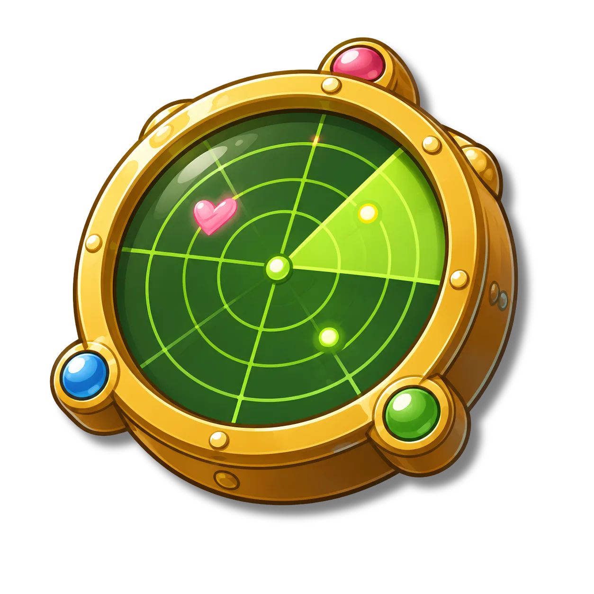
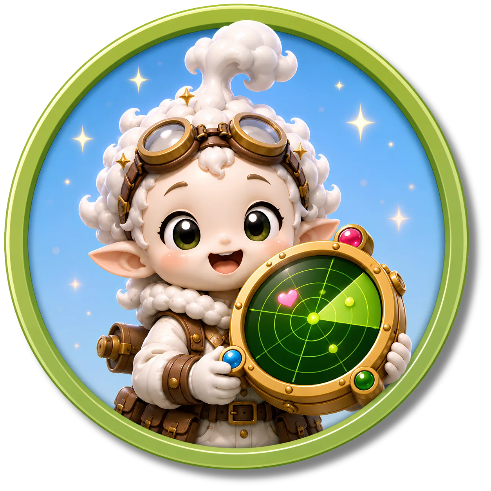

안개 행성

안개 행성이 짙은 안개에
뒤덮였어! 주민들이 겉모습만
보고 서로를 판단하면서
진짜 감정을 잃어버렸어.
표정과 행동, 상황의 단서를
찾아 숨겨진 감정을 밝혀 보자!
- ⭐ 사람마다 느끼는 감정과 감정을 해소하는 방법, 공감받고 싶은 방법이 서로 다를 수 있음을 이해한다.
- ⭐ 표정, 말투, 행동, 상황을 종합하여 친구의 감정을 이해한다.
-
관찰의 호박석 안개 행성에서 얻는 두 번째 원석이에요.
-

공감 레이더 친구의 숨은 감정을 찾아내는 도구예요. -
 공감 에너지 경험치 공감 에너지를 모아 레벨을 올릴 수 있어요.
공감 에너지 경험치 공감 에너지를 모아 레벨을 올릴 수 있어요.

안개 속 숨겨진 감정을 찾아라!
감정의 단서를 찾아 친구의 진짜 마음을 알아보세요!
- 1 감정 설명서
- 2 공감 레이더 만들기
- 3 숨은 감정 찾기